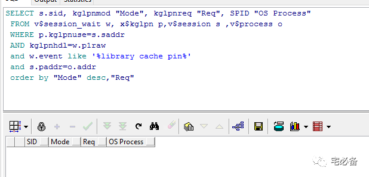

记一次library cache pin等待的处理
2017-11-01 Oracle 宅必备
这个专题讲一些日常运维的异常处理
今天讲一次library cache pin等待的处理
1. 起因
上周我们虚拟化宕机导致上面的2套数据库停机，而这2套数据库和其他数据库有着千丝万缕的联系，这就导致很多进程处于hang的状态，即一直ACTIVE且无法自行结束。
在数据库恢复后发现有台数据库CPU一直很高，查询v$session_wait视图发现library cache pin 等待严重，这点也可从statpack报告中看出
select sid, event, p1raw, seconds_in_wait, wait_time
from v$session_wait where event = 'library cache pin' and state = 'WAITING';
2. 原因查找
Library cache pins 用于管理库缓存冲突，库缓存主要用于存放SQL 执行计划用于重用，当一个会话pin的时候需要首先持有该执行计划地址的latch，有NULL, SHARE (S)或EXCLUSIVE(X)三种方式
-
一个X 请求 (3) 会被其他任何持有 S 模式(2) 的会话阻塞
-
一个 S 请求 (2) 会被其他任何持有X模式 (3) 的会话阻塞, 也会被其他X请求 (3)的会话阻塞
知道了这些我们就来查询下有哪些会话在相互阻塞
SELECT s.sid, kglpnmod "Mode", kglpnreq "Req", SPID "OS Process"
FROM v$session_wait w, x$kglpn p,v$session s ,v$process o
WHERE p.kglpnuse=s.saddr
AND kglpnhdl=w.p1raw
and w.event like '%library cache pin%'
and s.paddr=o.addr
order by "Mode" desc,"Req"
从上面的结果我们可以看出 会话331 和277持有 X(3) 锁，它们阻塞了下面其他的S(2) 请求
3.问题处理
3.1 查找SQL语句
找到了源头我们先看下这2个会话对应的SQL语句
select sid,serial#, decode(sql_hash_value,0,prev_hash_value,sql_hash_value) from v$session where sid=277
这里我们可以间隔一段时间后查看 hash_value是否变化
最后我们查询其对应的语句
select sql_text from v$sqltext where hash_value=195271222 order by piece;

我这里查询的语句为空，表示可能这个会话处于假死状态
3.2 结束会话
首先我们采用常规的命令来杀死会话
alter system kill session '277,35'
发现杀不掉，那么我们采用杀死进程的方式
首先找到该会话对应的进程
select b.spid from v$session a,v$process b
where a.PADDR=b.addr and a.SID='277'
select b.spid from v$session a,v$process b
where a.PADDR=b.addr and a.SID='331'
接下来查询该进程的开始时间
发现时间为10月24日,和故障发生的点契合
这时我们放心的杀死他
kill -9 25163
kill -9 25396
4. 处理完成
杀完之后我们在查询

发现已经没有锁了
最后查询等待事件，发现也没有了library cache pin等待
本文参考自:
http://blog.csdn.net/tianlesoftware/article/details/6638899